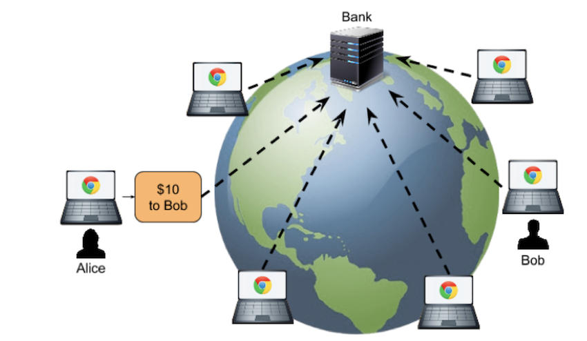
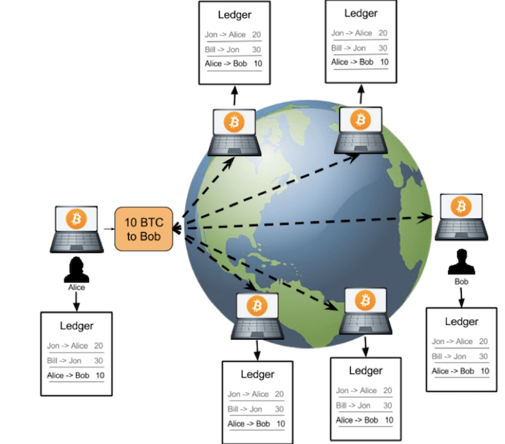

1 区块链的革命性及技术概要
区块链技术的革命性
说区块链必然要谈比特币，比特币是一种数字货币。但最令人叫绝的是，比特币号称有下面几个特性。
- 去中心化。这意味着没有中心的服务器，不受某个人的控制，整个系统直接由用户端的电脑构成。这样的技术难度是非常大的，并不像手机 App 或是小网站一样，你想发布就发布，这需要有人来跟你一起玩。
- 数据防篡改。所有交易记录全量保存，并公开给所有的人，而且还被加密和校验。并不是数据不能被篡改，而是数据被篡改的成本非常大。（有人借此说区块链的不可篡改可以解决人类的信任问题，这个并不一定。）
- 固定的发行量。不会像国家中央银行那样乱印钞票，造成通货膨胀。
这几个东西加在一起，就可以让那些想作弊的人，尤其是那些有权有势有钱的大公司大组织很难作恶。因为 " 去中心化 " 这个事，从本质上来说，造就了整个系统不再需要这些个大的公司和组织，人民可以达到真正意义上的自治，这些个大公司都会倒闭。
简单说来，相信区块链的人都相信，可以通过区块链这个技术来改变整个社会的组织形成——不再需要银行、中介机构、电商平台、支付宝等中间机构，人们可以通过一个不受任何人控制和操作的 P2P 金融系统，进行完全自由和可信的交易。
当然，反区块链的人的观点也很明确。他们认为，所谓的去中心化看似很美好，但实则不可能。而且从目前的区块链的应用来看，也没有颠覆什么，连迹象都没有。反而，大家都在疯狂地炒作概念，没有实质的价值。像 ICO 和交易所这样的东西里面充满了大量的投机主义，泡沫非常大。
Initial Coin Offering (ICO)
技术概要
首先，我们先看一下中心化和去中心化的业务流是什么样的。
下面的图给出了 " 传统中心化 " 和 " 去中心化 " 的对比。

中心化结构（大家都将记账权交给银行）

去中心化的交易
去中心化的比特币交易处理流程如下。
- 首先，需要交易的用户把交易传到网络中。
- 然后，网络上有些机器叫记账结点，它们通过比拼计算力的方式竞争记账权。这也叫 " 挖矿 "。
- 获得记账权的结点，会把待记账的交易进行计算打包，并向全网广播。收到新的记账包的结点会对其进行验证，验证通过后加入自己的区块
注意，整个比特币的世界是没有服务器的，其完全是靠大家用自己的电脑拼出来的一个分布式系统。既然这些电脑都是大家自己的，所以这种 P2P 的去中心化网络有一个前提假设——“网络中的任何结点都是不能信任的，它们中的任何一个都可能会作恶”。
基于这个前提假设，这个分布式的账本系统就需要有如下的设计：任何人都可以拿到所有的数据。所以，数据要能很容易被验证是合法的没有被修改过的，而且也要是很难被人修改的。
基于这个设计，比特币使用了两个比较大的技术：“区块链技术 "和" 工作量证明共识机制”。
区块链
第一个技术就是区块链，区块链又叫 blockchain，其中有一个一个的区块，每个区块中包括着一组交易信息，然后，每一个区块都会有一个 ID（或是一个地址），这些区块通过记录前一个区块的 ID 来形成一条链。

但需要注意下面这几个方面。
- 每个块的 ID 都是通过其内容生成的，所以，只要是内容有一丁点儿的变化，这个 ID 都会完全不一样。
- 而生成 ID 的内容中还包括上一个块的 ID。于是只要上一个块的内容变了，其 ID 也要跟着变（不然就不合法了），那么后面指向这个块的 ID 也要变。于是，后面指向这个块的 ID 也要重新计算，而变成另一个，这样就会形成一个连锁效应——一个块被修改，后续的所有块都要跟着一起改。于是导致了修改成本的提升。
- 这种一处改，处处改的方式，并不代表不能篡改，而只是让修改面比较大，让你的改动麻烦一点。
- 越旧的区块的篡改会造成越大面积的修改，于是越旧的区块就不容易篡改，就越安全。反之，越新的区块就越不安全。
工作量证明共识机制
我们知道，分布式网络的数据一致性是最难的问题了，在这种去中心化的网络集群下就更难了。其中最大的本质差别是，一个公司内的分布式系统中的结点是被假设成可信任的，而在去中心化的网络下，结点要被假设成不可信任的
这里，需要解决几个与 " 数据一致性 " 相关的问题。
-
以谁的数据为准？ 任何结点都可以修改自己所下载的账本，也就是任何一个人都可以伪造账本。那么，谁的数据才是对的？
- 在去中心化的网络下，我们只能认为，大多数人认识的数据是对的。
- 只要我控制了一半以上的结点，我让这 " 大多数人 " 伪造同一份账本，那么相当于整个账本都被我修改过来了。因为在没有服务器的去中心化的网络下，所谓的真理只不过是大多数人同意的东西。
-
" 大多数人 " 的问题。 是人数吗？在网络世界里，我可以用程序模拟出无穷多的 " 人 " 出来投票，所以，用人数来解决去中心化的问题，在分不清是人还是狗，是生物还是程序的计算机世界里，是一件很愚蠢的事。
- 意见分歧问题。 如果在同一个时刻，有多个人都在告诉其它人，这账应该这么记。比如说，有人说，A转了 10 块钱给了B，有人说，A转了 20 元给了B，还有人说，A没有花钱，是C的钱。而且，他们的数据都合法，那么，整个网络应该听谁的？
是的，这种没有人组织的玩法真是乱啊。
为了解决这几个问题，比特币使用了 Proof-of-Work 工作量证明机制，也就是 " 挖矿 "。所谓的 " 挖矿 " 其实就是用大规模的计算来找到一个符合系统要求的区块 ID
要找到符合条件的区块 ID 只能通过暴力穷举的方式，所以要付出大量的系统计算资源和电力。
这样一来，我们用这种 " 极度消耗计算力 " 的方式来提高成本，从而有效地遏制或解决下面几个问题。
- 修改几乎变得不可能。试想，如果生成一个区块需要大量的长时间的计算力。也就是在世界上最好的电脑集群下计算 10 分钟才能打好一个包，那么，当我们要去修改数据内容的时候，这个过程也是一样的。前面说过，如果你要伪造一个块，那么你就要修改后面所有的块，修改一个块的成本如此之高，那么修改整个链的成本也就非常之高了。
- 能掌握 51% 的算力的人也变得几乎不可能。除了伪造一条链的成本很高，还要控制大多数人的算力，这意味着，是一个非常大的金钱的投入。这两个难度加起来，几乎不太可能。
- 解决分歧。一方面，这么大的工作量找出来的区块 ID，已经有效地降低了大家有意见冲突的概率。另一方面，就算是出现了合法冲突的区块（同时出现了多个合理的区块，即区块链出现分支 / 分叉），也就是多个合法的账本。而因为挖矿的成本太高，导致要同时跟进多个账本是不可能的，所以矿工们只能赌跟其中一个。大多数人所选择的那一个分支的链就会越来越多，于是另外一边也就无人问津，从而作废了。
你别看 Proof-of-Work 成本这么高，还这么耗电不环保，但是，这是目前去中心化系统中最安全的玩法。（其中的相关细节可以查看后面的 " 挖矿 " 和 " 去中心化的共识机制 "。）